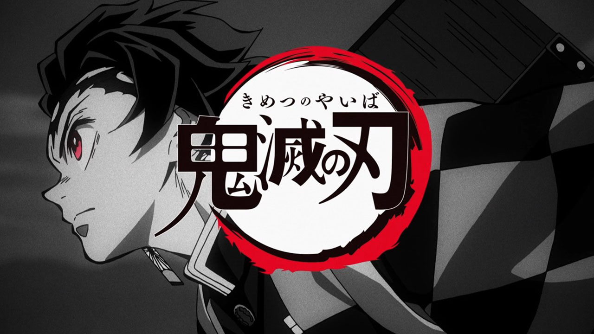

En el Japón de la era Taisho, Tanjiro Kamado es un joven de buen corazón que se gana la vida vendiendo carbón. Pero su pacífica vida se hace añicos cuando un demonio asesina a su familia y convierte a su hermana Nezuko en un demonio.

Historia
Después de que su familia es asesinada y su hermana Nezuko se transforma en un demonio, Tanjiro se embarca en un viaje para convertirse en un cazador de demonios y encontrar una manera de devolver a Nezuko a su forma humana.
Tanjiro Kamado
El protagonista, un joven de buen corazón que se convierte en cazador de demonios para vengar a su familia y encontrar una manera de restaurar a su hermana Nezuko a su forma humana.
Nezuko Kamado
La hermana menor de Tanjiro, que se transforma en un demonio después del asesinato de su familia. Tanjiro está decidido a encontrar una manera de devolverla a su forma humana.